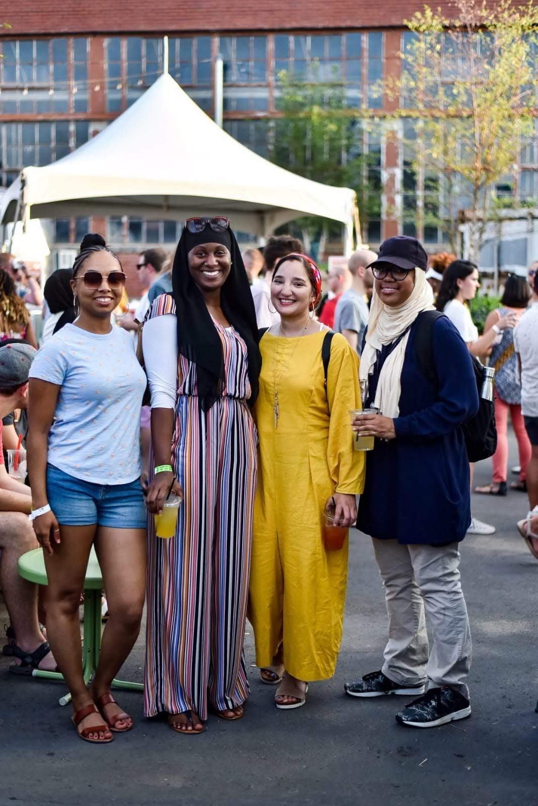

Me on the far right with the hat on, with friends at a festival.
- Personal Background: My home town is ABQ, NM, but lived in three other states before coming to NC in 2016. I am the youngest of 6 siblings. Before coming to Charlotte, I took a big gap year after finishing my first college semester.
- Professional Background: I am currently interning with a program called Year Up and will continue until the beginning of next
year.
- Academic Background: Graduated high school in 2015 and took one semester at a community college in Kansas City. I have taken two short semesters at CPCC.
- Primary Computer Platform: Windows is my primary computer platform.
- Courses I’m Taking & Why:
- WBL_111: The program I'm in, enrolled me in it.
- WEB_110: The program I'm in, enrolled me in it.
- CTS_115: The program I'm in, enrolled me in it.
- Something to Remember Me By: To de-stress I sew and watch anime.